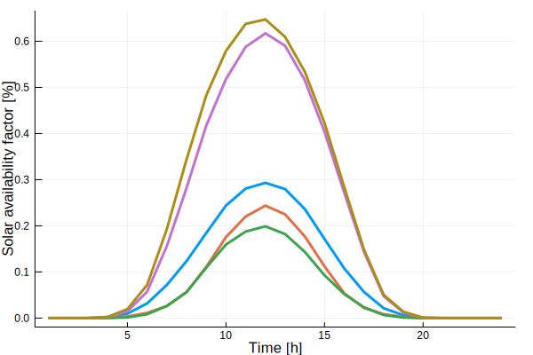

Representative Periods
The following describes how to find representative periods out of the full time-series input data. This includes both clustering and extreme period selection.
Clustering
The function run_clust() takes the data and gives a ClustResult struct with the clustered data as the output.
TimeSeriesClustering.run_clust — Method.run_clust(data::ClustData;
norm_op::String="zscore",
norm_scope::String="full",
method::String="kmeans",
representation::String="centroid",
n_clust::Int=5,
n_seg::Int=data.T,
n_init::Int=1000,
iterations::Int=300,
attribute_weights::Dict{String,Float64}=Dict{String,Float64}(),
save::String="",#QUESTION dead?
get_all_clust_results::Bool=false,
kwargs...)Take input data data of dimensionality N x T and cluster into data of dimensionality K x T.
The following combinations of method and representation are supported by run_clust:
| Name | method | representation | comment |
|---|---|---|---|
| k-means clustering | <kmeans> | <centroid> | - |
| k-means clustering with medoid representation | <kmeans> | <medoid> | - |
| k-medoids clustering (partitional) | <kmedoids> | <medoid> | - |
| k-medoids clustering (exact) | <kmedoids_exact> | <medoid> | requires Gurobi and the additional keyword argument kmexact_optimizer. See [examples] folder for example use. Set n_init=1 |
| hierarchical clustering with centroid representation | <hierarchical> | <centroid> | set n_init=1 |
| hierarchical clustering with medoid representation | <hierarchical> | <medoid> | set n_init=1 |
The other optional inputs are:
| Keyword | options | comment |
|---|---|---|
norm_op | zscore | Normalization operation. 0-1 not yet implemented |
norm_scope | full,sequence,hourly | Normalization scope. The default (full) is used in most of the current literature. |
n_clust | e.g. 5 | Number of clusters that you want to obtain |
n_seg | e.g. 10 | Number of segments per period. Not yet implemented, keep as default value. |
n_init | e.g. 1000 | Number of initializations of locally converging clustering algorithms. 10000 often yields very stable results. |
iterations | e.g. 300 | Internal parameter of the partitional clustering algorithms. |
attribute_weights | e.g. Dict("wind-germany"=>3,"solar-germany"=>1,"el_demand-germany"=>5) | weights the respective attributes when clustering. In this example, demand and wind are deemed more important than solar. |
save | false | Save clustered data as csv or jld2 file. Not yet implemented. |
get_all_clust_results | true,false | false gives a ClustData struct with only the best locally converged solution in terms of clustering measure. true gives a ClustDataAll struct as output, with all locally converged solutions. |
kwargs | e.g. kmexact_optimizer | optional keyword arguments that are required for specific methods, for example k-medoids exact. |
The following examples show some use cases of run_clust.
julia> clust_res = run_clust(ts_input_data) # uses the default values, so this is a k-means clustering algorithm with centroid representation that finds 5 clusters.
ClustResult(ClustData("none", [2016], 5, 24, Dict{String,Array}("solar-germany"=>[0.0 -0.0 … -0.0 -0.0; 0.0 -0.0 … -0.0 -0.0; … ; 0.0 -0.0 … -0.0 -0.0; 0.0 -0.0 … -0.0 -0.0],"wind-germany"=>[0.111879 0.548621 … 0.120139 0.144016; 0.10753 0.551439 … 0.115391 0.140524; … ; 0.117154 0.557464 … 0.130994 0.158663; 0.11598 0.550454 … 0.128324 0.154858],"el_demand-germany"=>[44242.9 46807.9 … 50251.2 42119.1; 44332.4 45903.6 … 49689.1 41490.6; … ; 47708.6 52505.0 … 55596.0 44497.6; 45671.1 49345.3 … 52602.3 42358.4]), [113.0, 28.0, 64.0, 66.0, 95.0], Dict{String,Array}("solar-germany"=>[0.0, 0.0, 0.0, 0.0, 0.0, 0.0, 0.0, 0.0, 0.0, 0.0 … 0.0, 0.0, 0.0, 0.0, 0.0, 0.0, 0.0, 0.0, 0.0, 0.0],"wind-germany"=>[0.0, 0.0, 0.0, 0.0, 0.0, 0.0, 0.0, 0.0, 0.0, 0.0 … 0.0, 0.0, 0.0, 0.0, 0.0, 0.0, 0.0, 0.0, 0.0, 0.0],"el_demand-germany"=>[0.0, 0.0, 0.0, 0.0, 0.0, 0.0, 0.0, 0.0, 0.0, 0.0 … 0.0, 0.0, 0.0, 0.0, 0.0, 0.0, 0.0, 0.0, 0.0, 0.0]), Dict{String,Array}("solar-germany"=>[1.0, 1.0, 1.0, 1.0, 1.0, 1.0, 1.0, 1.0, 1.0, 1.0 … 1.0, 1.0, 1.0, 1.0, 1.0, 1.0, 1.0, 1.0, 1.0, 1.0],"wind-germany"=>[1.0, 1.0, 1.0, 1.0, 1.0, 1.0, 1.0, 1.0, 1.0, 1.0 … 1.0, 1.0, 1.0, 1.0, 1.0, 1.0, 1.0, 1.0, 1.0, 1.0],"el_demand-germany"=>[1.0, 1.0, 1.0, 1.0, 1.0, 1.0, 1.0, 1.0, 1.0, 1.0 … 1.0, 1.0, 1.0, 1.0, 1.0, 1.0, 1.0, 1.0, 1.0, 1.0]), [1.0 1.0 … 1.0 1.0; 1.0 1.0 … 1.0 1.0; … ; 1.0 1.0 … 1.0 1.0; 1.0 1.0 … 1.0 1.0], [5, 2, 2, 3, 3, 4, 3, 2, 5, 3 … 4, 3, 2, 2, 2, 2, 5, 5, 5, 5]), 5665.825531962603, Dict{String,Any}("attribute_weights"=>Dict{String,Float64}(),"n_clust"=>5,"method"=>"kmeans","iterations"=>300,"norm_op"=>"zscore","n_init"=>1000,"norm_scope"=>"full","representation"=>"centroid","n_seg"=>24))
julia> clust_res = run_clust(ts_input_data;method="kmedoids",representation="medoid",n_clust=10) #kmedoids clustering that finds 10 clusters
ClustResult(ClustData("none", [2016], 10, 24, Dict{String,Array}("solar-germany"=>[0.0 0.0 … 0.0 0.0; 0.0 0.0 … 0.0 0.0; … ; 0.0 0.0 … 0.0 0.0; 0.0 0.0 … 0.0 0.0],"wind-germany"=>[0.057912 0.496404 … 0.188496 0.213711; 0.0522746 0.493944 … 0.177836 0.211353; … ; 0.151699 0.449664 … 0.168714 0.227856; 0.145651 0.445769 … 0.164819 0.223858],"el_demand-germany"=>[41520.2 42974.1 … 46793.8 36372.4; 41115.1 41767.7 … 47474.4 36336.5; … ; 40964.4 49259.5 … 50030.8 42491.1; 38478.8 46606.3 … 48053.1 40898.6]), [34.0, 15.0, 99.0, 10.0, 44.0, 36.0, 28.0, 33.0, 37.0, 30.0], Dict{String,Array}("solar-germany"=>[0.0, 0.0, 0.0, 0.0, 0.0, 0.0, 0.0, 0.0, 0.0, 0.0 … 0.0, 0.0, 0.0, 0.0, 0.0, 0.0, 0.0, 0.0, 0.0, 0.0],"wind-germany"=>[0.0, 0.0, 0.0, 0.0, 0.0, 0.0, 0.0, 0.0, 0.0, 0.0 … 0.0, 0.0, 0.0, 0.0, 0.0, 0.0, 0.0, 0.0, 0.0, 0.0],"el_demand-germany"=>[0.0, 0.0, 0.0, 0.0, 0.0, 0.0, 0.0, 0.0, 0.0, 0.0 … 0.0, 0.0, 0.0, 0.0, 0.0, 0.0, 0.0, 0.0, 0.0, 0.0]), Dict{String,Array}("solar-germany"=>[1.0, 1.0, 1.0, 1.0, 1.0, 1.0, 1.0, 1.0, 1.0, 1.0 … 1.0, 1.0, 1.0, 1.0, 1.0, 1.0, 1.0, 1.0, 1.0, 1.0],"wind-germany"=>[1.0, 1.0, 1.0, 1.0, 1.0, 1.0, 1.0, 1.0, 1.0, 1.0 … 1.0, 1.0, 1.0, 1.0, 1.0, 1.0, 1.0, 1.0, 1.0, 1.0],"el_demand-germany"=>[1.0, 1.0, 1.0, 1.0, 1.0, 1.0, 1.0, 1.0, 1.0, 1.0 … 1.0, 1.0, 1.0, 1.0, 1.0, 1.0, 1.0, 1.0, 1.0, 1.0]), [1.0 1.0 … 1.0 1.0; 1.0 1.0 … 1.0 1.0; … ; 1.0 1.0 … 1.0 1.0; 1.0 1.0 … 1.0 1.0], [6, 2, 2, 7, 7, 9, 7, 7, 6, 2 … 9, 7, 2, 2, 2, 2, 6, 6, 6, 6]), 4411.250669945201, Dict{String,Any}("attribute_weights"=>Dict{String,Float64}(),"n_clust"=>10,"method"=>"kmedoids","iterations"=>300,"norm_op"=>"zscore","n_init"=>1000,"norm_scope"=>"full","representation"=>"medoid","n_seg"=>24))
julia> clust_res = run_clust(ts_input_data;method="hierarchical",representation=medoid,n_init=1) # Hierarchical clustering with medoid representation.
ERROR: UndefVarError: medoid not definedThe resulting struct contains the data, but also cost and configuration information.
julia> ts_clust_data = clust_res.clust_data
ClustData("none", [2016], 10, 24, Dict{String,Array}("solar-germany"=>[0.0 0.0 … 0.0 0.0; 0.0 0.0 … 0.0 0.0; … ; 0.0 0.0 … 0.0 0.0; 0.0 0.0 … 0.0 0.0],"wind-germany"=>[0.057912 0.496404 … 0.188496 0.213711; 0.0522746 0.493944 … 0.177836 0.211353; … ; 0.151699 0.449664 … 0.168714 0.227856; 0.145651 0.445769 … 0.164819 0.223858],"el_demand-germany"=>[41520.2 42974.1 … 46793.8 36372.4; 41115.1 41767.7 … 47474.4 36336.5; … ; 40964.4 49259.5 … 50030.8 42491.1; 38478.8 46606.3 … 48053.1 40898.6]), [34.0, 15.0, 99.0, 10.0, 44.0, 36.0, 28.0, 33.0, 37.0, 30.0], Dict{String,Array}("solar-germany"=>[0.0, 0.0, 0.0, 0.0, 0.0, 0.0, 0.0, 0.0, 0.0, 0.0 … 0.0, 0.0, 0.0, 0.0, 0.0, 0.0, 0.0, 0.0, 0.0, 0.0],"wind-germany"=>[0.0, 0.0, 0.0, 0.0, 0.0, 0.0, 0.0, 0.0, 0.0, 0.0 … 0.0, 0.0, 0.0, 0.0, 0.0, 0.0, 0.0, 0.0, 0.0, 0.0],"el_demand-germany"=>[0.0, 0.0, 0.0, 0.0, 0.0, 0.0, 0.0, 0.0, 0.0, 0.0 … 0.0, 0.0, 0.0, 0.0, 0.0, 0.0, 0.0, 0.0, 0.0, 0.0]), Dict{String,Array}("solar-germany"=>[1.0, 1.0, 1.0, 1.0, 1.0, 1.0, 1.0, 1.0, 1.0, 1.0 … 1.0, 1.0, 1.0, 1.0, 1.0, 1.0, 1.0, 1.0, 1.0, 1.0],"wind-germany"=>[1.0, 1.0, 1.0, 1.0, 1.0, 1.0, 1.0, 1.0, 1.0, 1.0 … 1.0, 1.0, 1.0, 1.0, 1.0, 1.0, 1.0, 1.0, 1.0, 1.0],"el_demand-germany"=>[1.0, 1.0, 1.0, 1.0, 1.0, 1.0, 1.0, 1.0, 1.0, 1.0 … 1.0, 1.0, 1.0, 1.0, 1.0, 1.0, 1.0, 1.0, 1.0, 1.0]), [1.0 1.0 … 1.0 1.0; 1.0 1.0 … 1.0 1.0; … ; 1.0 1.0 … 1.0 1.0; 1.0 1.0 … 1.0 1.0], [6, 2, 2, 7, 7, 9, 7, 7, 6, 2 … 9, 7, 2, 2, 2, 2, 6, 6, 6, 6])
julia> clust_cost = clust_res.cost
4411.250669945201
julia> clust_config = clust_res.config
Dict{String,Any} with 9 entries:
"attribute_weights" => Dict{String,Float64}()
"n_clust" => 10
"method" => "kmedoids"
"iterations" => 300
"norm_op" => "zscore"
"n_init" => 1000
"norm_scope" => "full"
"representation" => "medoid"
"n_seg" => 24The ts_clust_data is a ClustData data struct, this time with clustered data (i.e. less representative periods).
Shape-based clustering methods are supported in an older version of TimeSeriesClustering: For use of DTW barycenter averaging (DBA) and k-shape clustering on single-attribute data (e.g. electricity prices), please use v0.1.
Extreme period selection
Additionally to clustering the input data, extremes of the data may be relevant to the optimization problem. Therefore, we provide methods for extreme value identification, and to include them in the set of representative periods.
The methods can be used as follows.
using TimeSeriesClustering
ts_input_data = load_timeseries_data(:CEP_GER1)
# define simple extreme days of interest
ev1 = SimpleExtremeValueDescr("wind-germany","min","absolute")
ev2 = SimpleExtremeValueDescr("solar-germany","min","integral")
ev3 = SimpleExtremeValueDescr("el_demand-germany","max","absolute")
ev = [ev1, ev2, ev3]
# simple extreme day selection
ts_input_data_mod,extr_vals,extr_idcs = simple_extr_val_sel(ts_input_data,ev;rep_mod_method="feasibility")
# run clustering
ts_clust_res = run_clust(ts_input_data_mod;method="kmeans",representation="centroid",n_init=100,n_clust=5) # default k-means
# representation modification
ts_clust_extr = representation_modification(extr_vals,ts_clust_res.clust_data)ClustData("none", [2016], 8, 24, Dict{String,Array}("solar-germany"=>[-0.0 0.0 … 0.0 0.0; -0.0 0.0 … 0.0 0.0; … ; -0.0 0.0 … 0.0 0.0; -0.0 0.0 … 0.0 0.0],"wind-germany"=>[0.279123 0.111879 … 0.695 0.1098; 0.275462 0.10753 … 0.6591 0.1195; … ; 0.278736 0.117154 … 0.633 0.4397; 0.270642 0.11598 … 0.6394 0.4503],"el_demand-germany"=>[47728.1 44242.9 … 40945.0 55809.0; 47369.8 44332.4 … 39356.0 54536.0; … ; 52237.4 47708.6 … 45446.0 60860.0; 49488.9 45671.1 … 42081.0 57340.0]), [64.0, 113.0, 95.0, 28.0, 66.0, 0.0, 0.0, 0.0], Dict{String,Array}("solar-germany"=>[0.0, 0.0, 0.0, 0.0, 0.0, 0.0, 0.0, 0.0, 0.0, 0.0 … 0.0, 0.0, 0.0, 0.0, 0.0, 0.0, 0.0, 0.0, 0.0, 0.0],"wind-germany"=>[0.0, 0.0, 0.0, 0.0, 0.0, 0.0, 0.0, 0.0, 0.0, 0.0 … 0.0, 0.0, 0.0, 0.0, 0.0, 0.0, 0.0, 0.0, 0.0, 0.0],"el_demand-germany"=>[0.0, 0.0, 0.0, 0.0, 0.0, 0.0, 0.0, 0.0, 0.0, 0.0 … 0.0, 0.0, 0.0, 0.0, 0.0, 0.0, 0.0, 0.0, 0.0, 0.0]), Dict{String,Array}("solar-germany"=>[1.0, 1.0, 1.0, 1.0, 1.0, 1.0, 1.0, 1.0, 1.0, 1.0 … 1.0, 1.0, 1.0, 1.0, 1.0, 1.0, 1.0, 1.0, 1.0, 1.0],"wind-germany"=>[1.0, 1.0, 1.0, 1.0, 1.0, 1.0, 1.0, 1.0, 1.0, 1.0 … 1.0, 1.0, 1.0, 1.0, 1.0, 1.0, 1.0, 1.0, 1.0, 1.0],"el_demand-germany"=>[1.0, 1.0, 1.0, 1.0, 1.0, 1.0, 1.0, 1.0, 1.0, 1.0 … 1.0, 1.0, 1.0, 1.0, 1.0, 1.0, 1.0, 1.0, 1.0, 1.0]), [1.0 1.0 … 1.0 1.0; 1.0 1.0 … 1.0 1.0; … ; 1.0 1.0 … 1.0 1.0; 1.0 1.0 … 1.0 1.0], [3, 4, 4, 1, 1, 5, 1, 4, 3, 1 … 5, 1, 4, 4, 4, 4, 3, 3, 3, 3])The resulting ts_clust_extr contains both the clustered periods and the extreme periods.
The extreme periods are first defined by their characteristics by use of SimpleExtremeValueDescr. The struct has the following options:
SimpleExtremeValueDescr(data_type::String,
extremum::String,
peak_def::String)Defines a simple extreme day by its characteristics
Input options:
- data_type::String : Choose one of the attributes from the data you have loaded into ClustData
- extremum::String :
min,max - peak_def::String :
absolute,integral
Then, they are selected based on the function simple_extr_val_sel:
TimeSeriesClustering.simple_extr_val_sel — Method.simple_extr_val_sel(data::ClustData,
extreme_value_descr_ar::Array{SimpleExtremeValueDescr,1};
rep_mod_method::String="feasibility")Selects simple extreme values and returns modified data, extreme values, and the corresponding indices.
Inputs options for rep_mod_method:
rep_mod_method::String :feasibility,append
ClustResult struct
The output of run_clust function is a ClustResult struct with the following fields.
TimeSeriesClustering.ClustResult — Type.ClustResult <: AbstractClustResultContains the results from a clustering run: The data, the cost in terms of the clustering algorithm, and a config file describing the clustering method used.
Fields:
- clust_data::ClustData
- cost::Float64: Cost of the clustering algorithm
- config::Dict{String,Any}: Details on the clustering method used
If run_clust is run with the option get_all_clust_results=true, the output is the struct ClustResultAll, which contains all locally converged solutions.
ClustResultAll <: AbstractClustResultContains the results from a clustering run for all locally converged solutions
Fields:
- clust_data::ClustData: The best centers, weights, clustids in terms of cost of the clustering algorithm
- cost::Float64: Cost of the clustering algorithm
- config::Dict{String,Any}: Details on the clustering method used
- centers_all::Array{Array{Float64},1}
- weights_all::Array{Array{Float64},1}
- clustids_all::Array{Array{Int,1},1}
- cost_all::Array{Float64,1}
- iter_all::Array{Int,1}
Example running clustering
In this example, the wind, solar, and demand data from Germany for 2016 are clustered to 5 representative periods, and the solar data is shown in the plot.
using TimeSeriesClustering
ts_input_data = load_timeseries_data(:CEP_GER1; T=24, years=[2016])
ts_clust_data = run_clust(ts_input_data;n_clust=5).clust_data
using Plots
plot(ts_clust_data.data["solar-germany"], legend=false, linestyle=:solid, width=3, xlabel="Time [h]", ylabel="Solar availability factor [%]")
savefig("clust.svg")┌ Warning: `getindex(df::DataFrame, col_ind::ColumnIndex)` is deprecated, use `df[!, col_ind]` instead.
│ caller = #add_timeseries_data!#12(::Int64, ::Int64, ::Array{Int64,1}, ::Function, ::Dict{String,Array}, ::SubString{String}, ::DataFrames.DataFrame) at load_data.jl:132
└ @ TimeSeriesClustering ~/build/holgerteichgraeber/TimeSeriesClustering.jl/src/utils/load_data.jl:132
/home/travis/.julia/packages/GR/ZI5OE/src/../deps/gr/bin/gksqt: error while loading shared libraries: libQt5Widgets.so.5: cannot open shared object file: No such file or directory
connect: Connection refused
GKS: can't connect to GKS socket application
Did you start 'gksqt'?
GKS: Open failed in routine OPEN_WS
GKS: GKS not in proper state. GKS must be either in the state WSOP or WSAC in routine ACTIVATE_WS